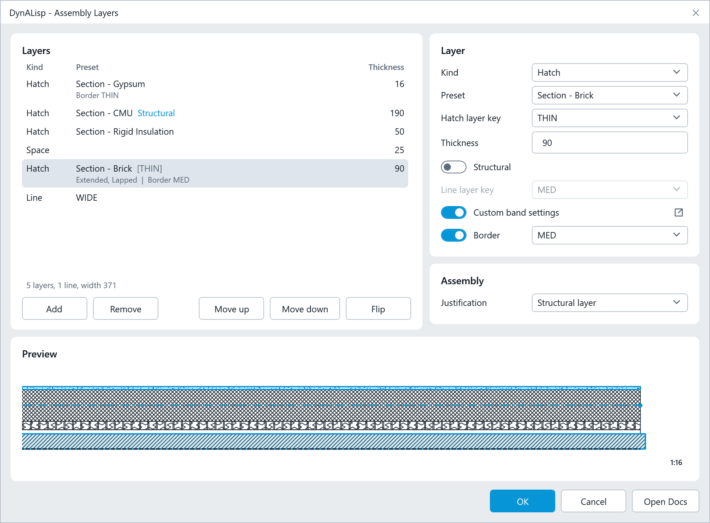

Assembly Layers
A Quick Draw preset drawn with Linear or Offset can be an assembly: its band is made of several layers side by side, like a wall (see Quick Draw – Assemblies). Check Assembly in the Behaviors box of the Quick Draw window, then click the square open button beside it: the Assembly Layers window edits the layers of the preset shown (of every preset selected, on OK). The text beside the button gives their number, and Width shows their total.

- Layers – the layers, in order across the band: the first one on the line (or the object), the others toward the side of the band, with Justification on Edge and with Offset (a wall drawn on its inner face: its inner layer first); from its left border to its right one, looking from the start point, on Center. Each line gives its kind, its preset (or the layer key of a line) and its thickness; a preset that no longer exists is marked (missing). Under the list: the number of layers and of lines, and the width of the band, the total of the thicknesses. Several layers can be selected (Ctrl / Shift click) to remove them at once.
- Kind – Hatch: a band of its thickness hatched as a Quick Draw preset says; Space: a band of its thickness without hatch (an air space, a cavity); Line: a line along the band, where it is in the list (a vapour barrier, a membrane). A layer keeps its preset, its thickness and its line layer key when its kind changes: turned back, it gets them again, and a line turned into a Hatch or a Space has a thickness at once (that of a new layer when it never had one); change it in Thickness.
- Preset – the Quick Draw preset of a Hatch layer, by group and name. It gives the hatch of the layer: its hatch preset, its Scale by width (the thickness of the layer as the width), its Origin on line and Origin X / Y (from the line of the layer: its center, or its border nearer to the line of the band when Hatch aligned to of its own band settings is Layer edge, into the layer; without them, its center). Its method, width, ends and border are not used: the layer ends with the band, unless it has its own Custom band settings, and has a border of its own only with Border. The presets listed are those saved (a new preset gets its id once saved) that are not assemblies themselves.
- Hatch layer key – of a Hatch layer: From preset, or another layer key for the hatch of this layer only (the preset itself is not changed), shown in brackets after the preset in the list. Saved in the Assembly column as a fourth field of the layer (P:qd-Brick:90:HATCH), only when it is set.
- Thickness – of a Hatch or Space layer, in drawing units (greater than 0). Picking a preset puts its width in it (the first one when it has several), unless another thickness was typed.
- Structural – of a Hatch layer: the structural layer of the assembly, its bearing layer (the blocks, the studs). One layer at most: checked on one, it is cleared on the others, and it is marked Structural in the list. With the Justification Structural layer, the line drawn is in its middle.
- Line layer key – the layer key of a Line layer (the outline layer key of the preset for a new one). The line gets the layer of the key, its properties ByLayer. A line between two layers takes the place of the line of their join.
- Custom band settings – of a Hatch layer: checked, the layer ends, turns its corners, draws its joints and aligns its hatch as a band of its own; click the square open button beside it to set them in the Band Settings window, for the layers selected that have it checked. A layer with its own settings ends across its own thickness: Round is a half circle across the layer, Extended without an extension goes out by half the thickness of the layer. Its Hatch aligned to gives the line of the layer, the same way for every layer: Layer center (its middle) or Layer edge (its border nearer to the line of the band), where its hatch starts and what its Angled ends turn around. Nothing is asked when drawn. Unchecked, the layer ends and turns with the whole band (square ends and mitered corners, or those picked when drawn); its settings are kept for when it is checked again. In the list, its ends and corners are shown under its preset (Extended, Lapped). A new layer starts from the band settings of the preset.
- Border – of a Hatch layer: checked, the outline of the layer is drawn on the layer key picked beside it (its properties ByLayer), even when the preset has no border; it is shown in the list (Border MED). A line between two layers is drawn once: by the layer with its own border (the first one when both have one), else as the border of the preset; where a Line layer is, its line takes that place. When two layers turn their corners differently, each one draws its own side. A layer with its whole outline gets it as one closed polyline.
- Justification – in the Assembly box: where the line drawn is, one line for the whole assembly. Ask when drawn, Center, Edge (the line on the border of the first layer, the band on the side picked once the line is drawn) or Structural layer (the line in the middle of the layer checked Structural; OK asks for one). It is the Justification of the Behaviors box of the Quick Draw window: changed here, it changes there.
- Preview – the assembly as it is drawn, built as the layers are added and changed: a wall drawn in plan, its line from left to right (dashed, in blue, where the Justification puts it), the first layer at the top. Each layer is hatched as its preset, ends at the right as it ends, its own border in blue; the layers selected are tinted. The wall is shown at a scale that fits it (in the corner, 1:10), its hatches at the same scale, so they look against the thickness of the layers as they are drawn at the annotation scale of the drawing.
- Add – adds a layer with the values of the fields after the layers selected (else last), and selects it. With none selected, the fields show a new layer: a Hatch of the first preset, a Line on the border layer key of the preset.
- Editing a layer – with one layer selected, the fields show it, and a field changed changes it.
- Editing several layers – select them with Ctrl or Shift click: the fields show the first one, the heading of the box gives their number (Layer (3 selected)), and a field changed is given to each of them it applies to, their other values kept: Kind turns them all into that kind, each one keeping its own preset, thickness and layer key; Preset, Hatch layer key, Custom band settings (and the Band Settings window), Border and its layer key go to the Hatch layers, Thickness to the Hatch and Space layers, Line layer key to the Line layers. Move up and Move down are for one layer.
- Adding a layer of another kind – Add a copy of the one selected, then change its fields.
- Remove – removes the layers selected.
- Move up / Move down – the place of the layer selected, toward the left or the right border of the band.
- Flip – puts the layers the other way, the last one first. At the start point of Linear (or the selection prompt of Offset), Flip does the same for one band only.
- OK – checks the layers (a thickness greater than 0 for a Hatch or a Space, a preset for a Hatch, a layer key for a Line or a border, the values of the band settings, a structural layer for Structural layer: the first one not valid is selected and a message says what to fix), then gives them to the presets selected (saved with them by Draw or Save of the Quick Draw window). Cancel discards the changes. Open Docs opens this page.